Real-time Volume Estimation of Mass in Excavator Bucket with LiDAR Data
Haodong Ding, Xibin Song, Zhenpeng He, Liangjun Zhang · 38th International Symposium on Automation and Robotics in Construction (ISARC 2021)
한줄 요약 — 불균일 LiDAR 점군을 버킷 자세로 다중 프레임 융합하고, 사전 스캔한 빈 버킷 모델과의 ICP 정합·선택적 높이맵 보간·셀별 체적 적분을 연속 수행해 별도 유압 압력센서 없이 실제 굴착 중 버킷 적재량과 만재 대비 충전율을 온라인 산출한 실시간 품질 계측 파이프라인이다.
1.연구 배경 및 동기
굴착 궤적의 실행 결과를 실제 버킷 적재량으로 계측
자율굴착의 품질은 계획한 궤적을 추종했는지뿐 아니라 버킷이 실제로 채워졌는지, 얼마나 많은 재료를 담았는지로 평가해야 한다. 같은 궤적도 토질·입도·가림·걸림에 따라 적재량이 달라지므로, 충전율과 체적은 다음 굴착을 재계획하기 위한 핵심 피드백이다. 논문은 이미 자율굴착기에 있는 캐빈 3D LiDAR와 버킷 경사센서로 움직이는 버킷의 적재 체적을 온라인 추정한다.
유압실린더 압력과 동역학 모델의 payload 추정은 추가 센서·보정이 필요하다. 축 대칭 물체의 투영법은 물체 회전·재스캔이 필요하고, 나무 같은 규칙 형상의 RANSAC fitting이나 드래그라인 2D scanline 재구성은 불규칙한 재료와 3D Livox 점군에 맞지 않는다. 특히 Livox Mid100은 점 분포가 비균일하고 한 frame에서 버킷 표면이 성기므로, 저자들은 자세 기반 10-frame 융합, 기준모델 정합, 2.5D 보간을 결합했다.
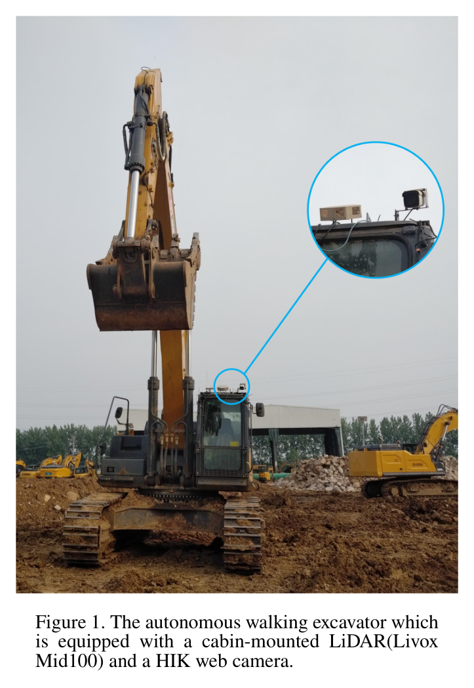
원문 Figure 1 · PDF p.2 — Figure 1. The autonomous walking excavator which is equipped with a cabin-mounted LiDAR(Livox Mid100) and a HIK web camera.
선행 연구의 한계
유압 payload 방식은 압력센서·동역학 모델과 별도 calibration을 요구한다.
물체 회전·규칙 형상 fitting 기반 체적법은 이동 버킷의 불규칙 재료에 부적합하다.
단일 Livox frame은 성기고 비균일하며 버킷 가림·운동잡음에 취약하다.
경사센서 자세만으로는 1 cm 높이맵 체적 계산에 충분한 정합정확도를 보장하지 못한다.
이 연구의 기여
약 10 frame을 자세 역변환으로 누적해 이동 중에도 밀집 버킷 점군을 만든다.
경사센서 초기값과 ICP를 결합해 실시간 점군을 빈 버킷 기준모델에 정합한다.
행·열 경계와 인접 유효점으로 보간영역을 제한한 높이맵 체적법을 제안한다.
실제 굴착기에서 충전율 사례와 단일-thread 실행시간을 검증한다.
2.방법론 및 시스템 구성
작업 전 빈 버킷을 스캔하고 PCA로 주축을 격자 좌표에 맞춘 뒤 수동 미세조정해 기준모델과 T_p를 저장한다. 온라인에서는 ROS TF 버킷 자세 주변 1.5 m의 점을 자르고 약 10 frame을 각 T_i의 역변환으로 누적한다. 정합용 복사본에 1 cm voxel downsample과 통계적 이상치 제거를 적용하고, 경사센서 T_init 뒤 ICP로 T_final을 얻는다.
최종변환으로 원본 누적점을 기준좌표에 놓고 passthrough filter로 버킷 구조를 대부분 제거한다. 빈 버킷과 적재물 표면을 각각 0.01×0.01 m 높이맵으로 만들고, 행·열 경계 안이면서 8×8 주변에 유효점이 있는 결측셀만 5×5 이웃 평균으로 채운다. 공통 유효셀의 높이차에 격자면적을 곱해 합산하고 만재체적 1.71 m³ 대비 충전율을 계산한다.
처리 파이프라인
1
1. 빈 버킷 모델
빈 버킷 LiDAR scan을 PCA·수동조정으로 XOY 격자에 정렬한다.
2
2. 주변점 분할
현재 버킷 자세 중심 반경 1.5 m에서 버킷·적재물 점을 자른다.
3
3. 10-frame 융합
각 frame 점군을 T_i 역변환으로 공통좌표에 누적한다.
4
4. 정합 전 필터
1 cm voxel과 최근접 100점·표준편차 0.8의 통계필터를 쓴다.
5
5. ICP 정합
T_init에서 normal 0.025 m, 대응거리 0.03 m, RMSE 0.01 m로 정제한다.
6
6. 적재물 분리
최종변환 뒤 passthrough로 실제점에서 버킷 구조를 제거한다.
7
7. 높이맵 생성
빈 버킷과 적재물 표면을 각각 1 cm 2.5D grid로 만든다.
8
8. 선택적 보간
8×8 영역으로 대상을 고르고 5×5 유효높이 평균으로 결측을 채운다.
9
9. 체적·충전율
공통 유효셀의 면적×높이차를 합산해 1.71 m³ 대비 비율을 낸다.
원문 수식과 의미
점군 융합 (Eq. 1)
B=\{T_i^{-1}B_i\mid i=1,2,\ldots,N\}
PDF p.2. frame별 버킷점을 자세 역변환으로 같은 좌표에 누적한다.
초기변환 (Eq. 2)
T_{init}=T_pT_l^{-1}
PDF p.2. 최신 버킷 자세를 되돌리고 기준모델 정렬을 적용한다.
최종변환 (Eq. 3)
T_{final}=T_{icp}T_{init}
PDF p.3. 경사센서 초기값에 ICP 보정을 결합한다.
높이 보간 (Eq. 4)
h_{mean}=\frac{1}{N}\sum_{i=1}^{N}h_i
PDF p.4. 선택된 결측셀을 주변 N개 유효높이 평균으로 채운다.
셀 높이차 (Eq. 5)
d=h_s-h_m
PDF p.4. 적재물 h_s와 빈 버킷 h_m의 수직차다.
체적 적분 (Eq. 6)
V=\sum_{d\in P_{valid}}l_{grid}^{2}d
PDF p.4. 공통 유효셀의 격자면적×높이차를 합산한다.
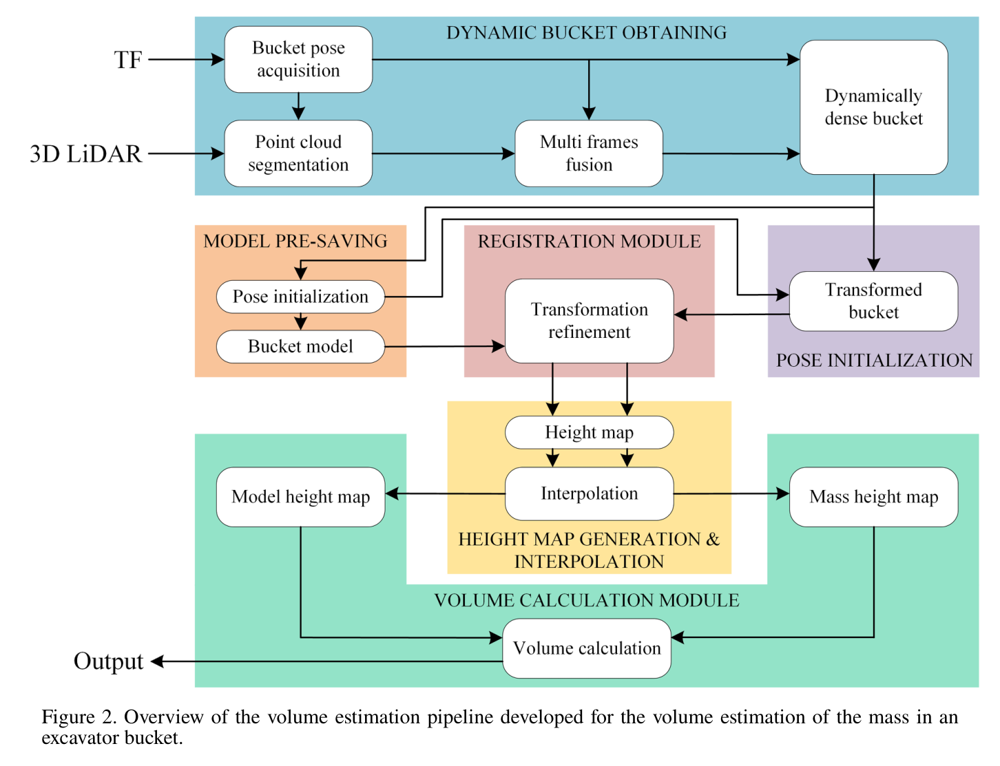
원문 Figure 2 · PDF p.3 — Figure 2. Overview of the volume estimation pipeline developed for the volume estimation of the mass in an excavator bucket.
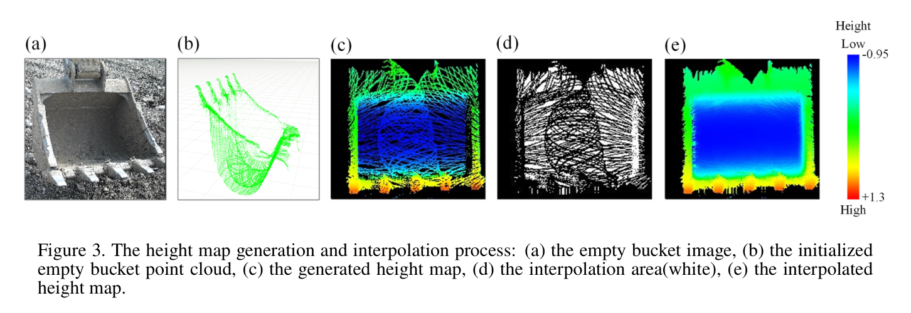
원문 Figure 3 · PDF p.4 — Figure 3. The height map generation and interpolation process: (a) the empty bucket image, (b) the initialized empty bucket point cloud, (c) the generated height map, (d) the interpolation area(white), (e) the interpolated height map.
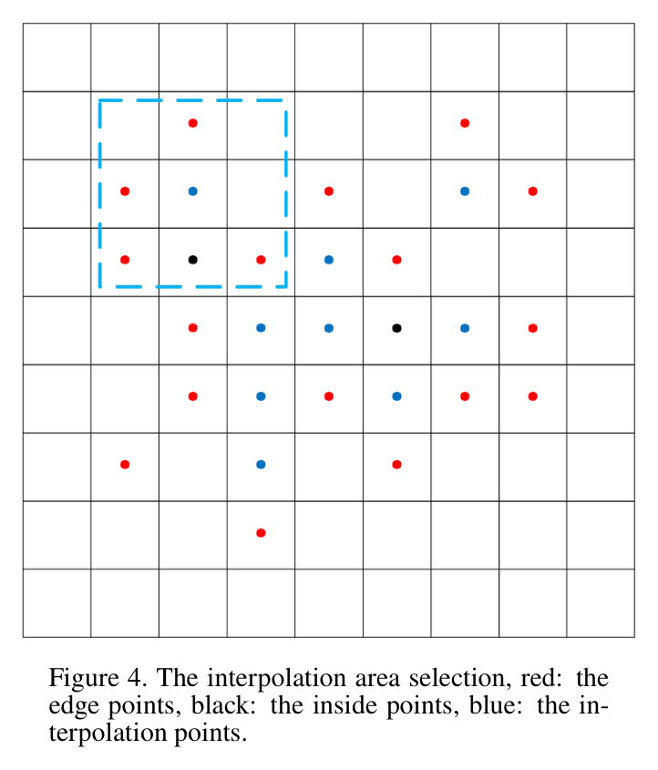
원문 Figure 4 · PDF p.4 — Figure 4. The interpolation area selection, red: the edge points, black: the inside points, blue: the in- terpolation points.
3.핵심 기술
자세기반 이동 점군 밀집화
Livox 한 frame의 성김을 약 10 frame 융합으로 보완한다. 단순 합산이 아니라 각 시점 자세 T_i를 되돌려 공통좌표에 놓으며, 이동 중에도 버킷·적재물 표면을 조밀하게 만든다. 빠르게 LiDAR에서 멀어질 때 생기는 날림점은 후단 필터가 완전히 제거하지 못한다.
약 10 frame
분할반경 1.5 m
ROS TF 자세
이동버킷 online fusion
경사센서 초기값+ICP
경사센서는 빠르지만 정밀하지 않아 ICP 초기값으로만 사용한다. 최대 대응거리를 3 cm로 제한해 적재물이 버킷을 가릴 때 먼 점이 잘못 대응되는 것을 줄인다. 정합에는 필터점, 높이맵에는 원본 누적점을 사용해 안정성과 표면밀도를 분리한다.
normal 0.025 m
대응거리 0.03 m
RMSE 0.01 m
정합용·체적용 점군 분리
선택적 2.5D 높이 보간
모든 hole을 채우면 버킷 밖 영역을 재료로 오인할 수 있어 행·열 경계와 주변점 조건으로 내부 결측만 보간한다. 계산은 빠르지만 cell당 z 하나만 보존하므로 overhang, 가림 뒤 표면, 버킷 옆 돌출물을 표현하지 못한다.
grid 0.01 m
영역탐색 8×8
보간 5×5
공통 유효셀만 합산
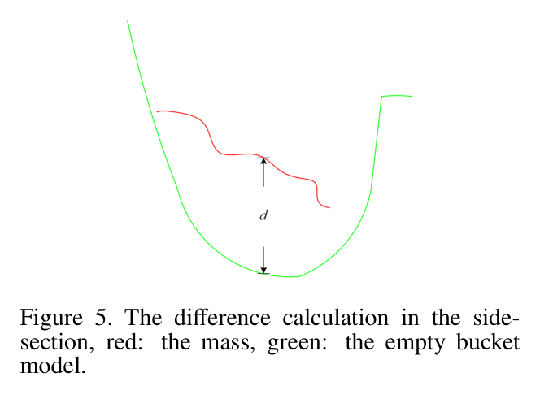
원문 Figure 5 · PDF p.5 — Figure 5. The difference calculation in the side- section, red: the mass, green: the empty bucket model.
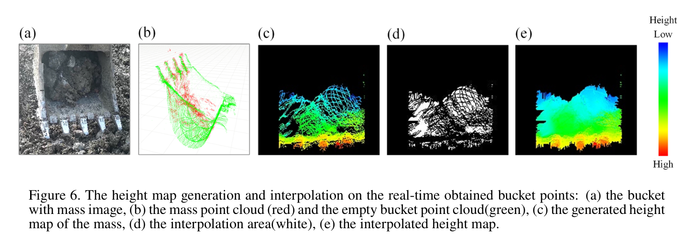
원문 Figure 6 · PDF p.6 — Figure 6. The height map generation and interpolation on the real-time obtained bucket points: (a) the bucket with mass image, (b) the mass point cloud (red) and the empty bucket point cloud(green), (c) the generated height map of the mass, (d) the interpolation area(white), (e) the interpolated height map.
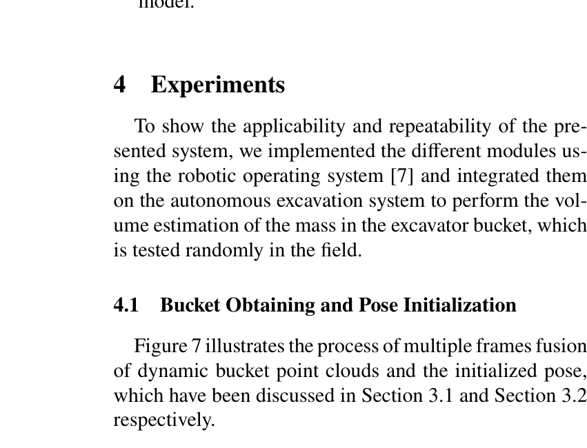
원문 Figure 7 · PDF p.5 — Figure 7 illustrates the process of multiple frames fusion of dynamic bucket point clouds and the initialized pose, which have been discussed in Section 3.1 and Section 3.2 respectively.
4.실험 결과
실험 환경·장비·데이터
Livox Mid100과 버킷 경사센서를 단 실제 자율 보행굴착기, ROS pipeline.
빈 버킷을 scan해 기준모델을 만들고 만재 기준체적을 1.71 m³로 계산했다.
정밀 ground truth가 어려워 현장 육안 충전율 0·50·70·105·115%와 비교했다.
단일-thread Intel Core i7-10875H에서 모듈별 시간을 측정했다.
실험 프로토콜
각 상태에서 1.5 m 분할과 약 10 frame 누적 후 필터·ICP를 수행했다.
빈 버킷·적재물 높이맵을 만들고 선택영역 보간 뒤 체적을 적분했다.
V_est/V_full×100으로 충전율을 계산해 다섯 관찰값과 비교했다.
모듈별 평균시간·표준편차를 기록해 online 주기와 병목을 확인했다.
비교 기준
알고리즘 baseline은 없고 현장 직접관찰 충전율을 기준으로 삼았다.
빈 버킷 0% 사례로 정합·잡음의 영점잔차를 확인했다.
모듈별 실행시간을 비교해 통계적 이상치 제거 병목을 확인했다.
평가 지표
관찰/추정 충전율
전체·모듈별 ms
만재체적 m³
빠른 운동의 정성 열화
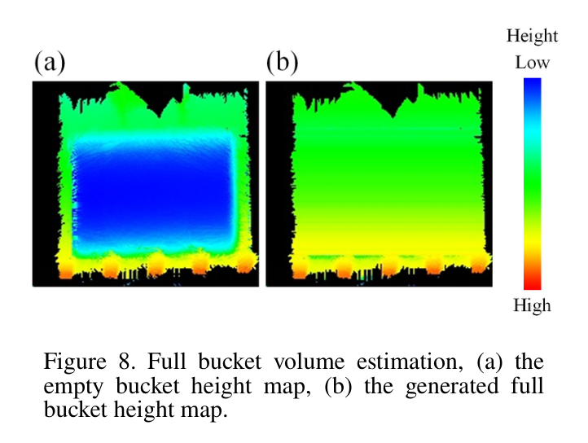
원문 Figure 8 · PDF p.6 — Figure 8. Full bucket volume estimation, (a) the empty bucket height map, (b) the generated full bucket height map.
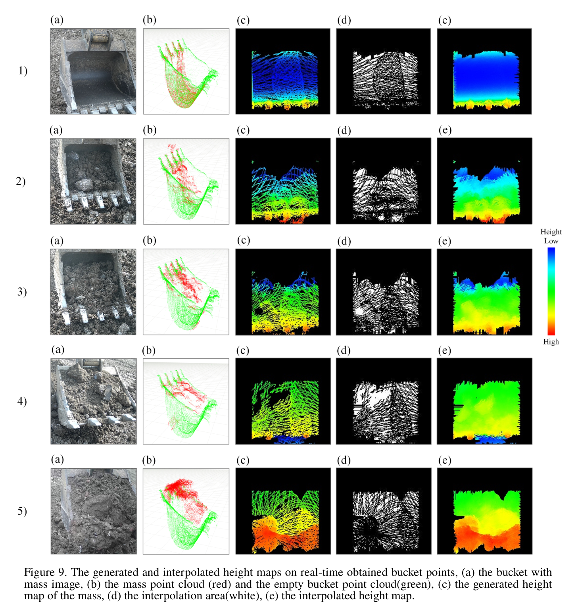
원문 Figure 9 · PDF p.7 — Figure 9. The generated and interpolated height maps on real-time obtained bucket points, (a) the bucket with mass image, (b) the mass point cloud (red) and the empty bucket point cloud(green), (c) the generated height map of the mass, (d) the interpolation area(white), (e) the interpolated height map.
핵심 결과 해석
관찰/추정 충전율은 0/0.93%, 50/47.51%, 70/72.16%, 105/107.35%, 115/110.86%였다. 빈 버킷의 0.93%는 정합오차·잡음 잔차이고, 다섯째 사례의 과소추정은 스캔되지 않은 영역 때문이라고 설명한다. 중간·만재초과 상태는 관찰값과 수 percentage point 이내였지만 기준이 정밀 3D ground truth가 아닌 육안 충전율이므로 절대정확도보다 현장 적용 가능성을 보여준다.
전체 평균은 539 ms였다. 버킷 분할·융합 46±11 ms, downsample 3±1 ms, 이상치 제거 286±7 ms, normal 20±6 ms, ICP 83±15 ms, 높이맵 생성·체적은 각 1 ms 미만, 영역선택 2±1 ms, 보간 5±1 ms였다. 절반 이상이 이상치 제거에 쓰인다. 빠른 이동 날림점, model 밖 돌출물과 미관측 영역은 체적 누락·정합오차를 만든다.
정량 결과
평가 항목
정량 결과
조건·맥락
원문 근거
만재 기준체적
1.71 m³
V_full
PDF p.6
빈 버킷
0% → 0.93%
Experiment 1
PDF p.6
50% 사례
50% → 47.51%
Experiment 2
PDF p.6
70% 사례
70% → 72.16%
Experiment 3
PDF p.6
105% 사례
105% → 107.35%
Experiment 4
PDF p.6
115% 사례
115% → 110.86%
미관측 영역
PDF p.6
전체시간
539 ms
single-thread i7-10875H
PDF p.5
이상치 제거
286±7 ms
최대 병목
PDF p.5
ICP 정렬
83±15 ms
normal 별도 20±6 ms
PDF p.5
실패 사례와 경계조건
빠르게, 특히 LiDAR에서 멀어지는 버킷은 날림점이 늘어 ICP와 체적이 열화된다.
빈 버킷 model 경계 밖으로 나온 돌·재료 체적은 합산되지 않는다.
가림·scan 누락 영역은 115% 사례처럼 과소추정을 만든다.
정합·잡음 때문에 빈 버킷에서도 0.93% 잔차가 남는다.
5.한계 및 향후 연구
현재 한계
원문은 model 밖 점을 무시해 버킷 옆 돌출물 체적을 계산하지 못한다고 밝힌다.
빠른 운동의 날림점이 ICP와 정확도를 낮춘다.
2.5D grid는 overhang·다층표면·가림 뒤 형상을 표현하지 못한다.
정밀 ground truth 없이 다섯 육안 충전율 사례만 평가했다.
539 ms 중 이상치 제거가 286±7 ms라 더 빠른 feedback에는 부담이다.
향후 연구
원문 후속과제인 빠른 이동 LiDAR noise suppression을 개발한다.
관절속도·IMU로 point deskew와 motion compensation을 적용한다.
TSDF·occupancy fusion으로 돌출부와 가림면을 포함한 3D 체적을 복원한다.
정밀 scan 또는 질량-밀도 기준으로 MAE·속도별 실패율을 검증한다.
6.한마디로 정리
핵심 방법은?
약 10 frame 점군을 자세로 융합하고 빈 버킷에 ICP 정합한 뒤 두 1 cm 높이맵의 차를 보간·적분한다.
운동 날림점, 미관측·model 밖 돌출물과 2.5D 표현, 정밀 ground truth 부재가 정확도 해석을 제한한다.
#환경인식#시스템통합·현장실증#점군 누적#ICP 정합#2.5D 높이맵#체적 적분
나의 의견 / 우리 연구와의 연관성
이 방법은 계획한 swept volume과 실제 적재량의 차를 측정해 굴착계획을 닫힌 루프로 만든다. rank 41 CEM이 고른 깊이·접근점 뒤 실제 충전율이 낮으면 다음 primitive를 보정하고, 과충전·돌출이 반복되면 인양·덤핑 경로를 바꿀 수 있다. 실배치에서는 체적값과 함께 관측셀 비율·ICP 적합도·버킷 속도를 신뢰도로 내보내 불확실할 때 재scan 또는 보수적 재계획을 해야 한다.
TaskNet의 다음 접근점·깊이와 종료를 실제 충전율로 보정한다.
예측체적-실측체적 차로 토질·swept-volume 보정계수를 online 학습한다.
저충전·과충전·미관측을 구분해 재굴착·dump·재scan primitive를 고른다.
3D 확장 시 돌출물까지 고려한 충돌 없는 인양·덤핑 계획과 연결한다.
7.전체 그림·표
본문 핵심 위치에 배치하지 않은 원문 Figure와 Table을 원문 페이지 순서로 수록한다.
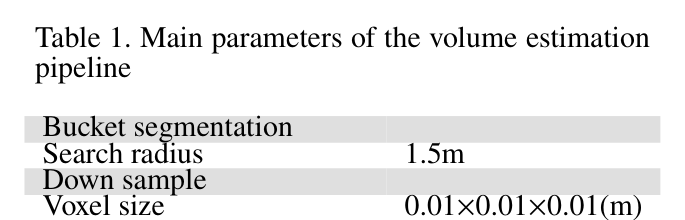
원문 Table 1 · PDF p.5 — Table 1. Main parameters of the volume estimation pipeline
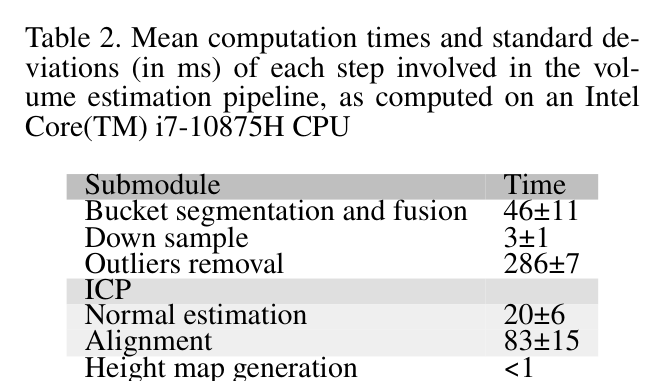
원문 Table 2 · PDF p.5 — Table 2. Mean computation times and standard de- viations (in ms) of each step involved in the vol- ume estimation pipeline, as computed on an Intel Core(TM) i7-10875H CPU
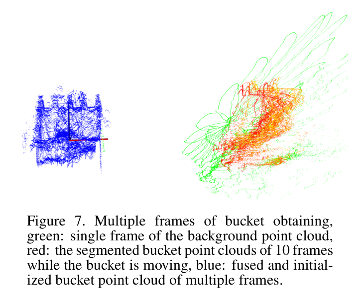
원문 Figure 7 · PDF p.6 — Figure 7. Multiple frames of bucket obtaining, green: single frame of the background point cloud, red: the segmented bucket point clouds of 10 frames while the bucket is moving, blue: fused and initial- ized bucket point cloud of multiple frames.
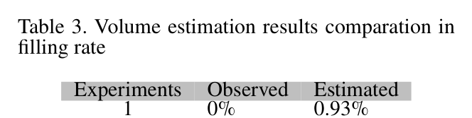
원문 Table 3 · PDF p.6 — Table 3. Volume estimation results comparation in filling rate